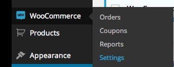
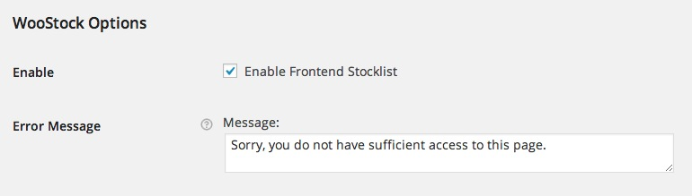
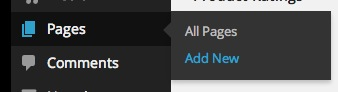
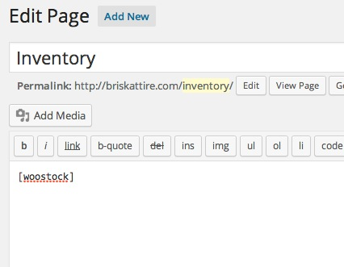
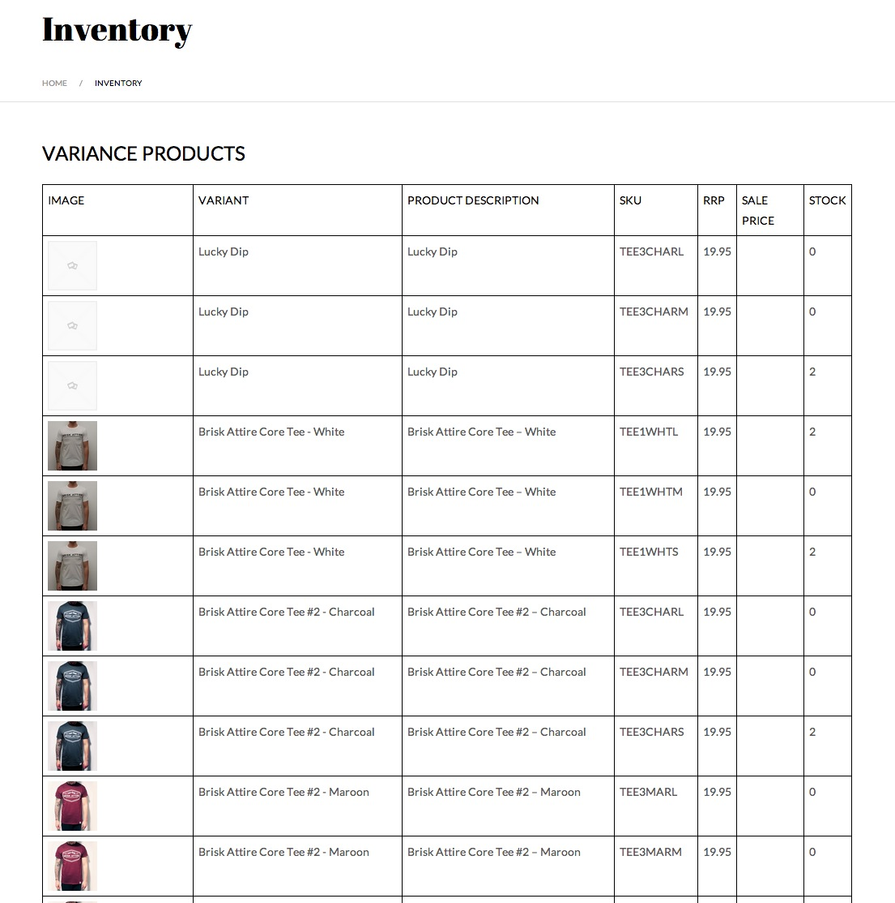

This plugin was built to display your woocommerce stocklist through a frontend view of your woocommerce website, so for example; this plugin is perfect for dropshipping product suppliers and keeping your various affiliated sites up to date with your stock. Simply give them credentials for your website and they'll be able to view the list on whatever page you choose to display it on.
Dependencies:
WooCommerce
Installation is very simple, simply follow these steps and we'll have you up and running in no time.
Alternatively, this can be uploaded by FTP by extracting woostock.zip and uploading the folder 'woostock' to your 'wp-content/plugins/' directory
At this point i'm presuming you already have WooCommerce set up and your store is busy selling products, if you haven't; you're not going to be able to go much further with us. Install WooCommerce, configure it and come back to us.
OK, so you may have noticed we haven't added any options panels to wordpress. I figured it would be worth keeping the options for this within WooCommerce, so head over to WooCommerce => Settings

And scroll down until you see our settings panel. There's a checkbox to enable the stocklist, this means that this can be enabled/disabled on the fly if you decide to customise the plugin and don't want to lose any custom settings when disabling. You can also add your custom message for any users who may stumble across the page an not have access

OK, so that's the hard part over. Now all we need to do is to create a new wordpress page and add a shortcode to it to to display our stocklist. Head over to Pages => Add New

Call your page whatever you'd like and add the shortcode [woostock] to the body and hit publish. That's it!

Call your page whatever you'd like and add the shortcode [woostock] to the body and hit publish. That's it!

Further Options: You can also customise the shortcode with parameters of how you want the inventory to appear. Syntax is: [woostock orderby={title|sku|stock|price} sort={ASC|DESC}] For example: `[woostock]` will show the inventory, with the items ordered by title. `[woostock orderby=sku]` will show the inventory ordered by SKU. `[woostock orderby=sku sort=DESC]` will show the inventory sorted by SKU in reverse order.
Thank you so much for purchasing this plugin. I'd be glad to help you if you have any questions relating to this. No guarantees, but I'll do my best to assist. If you have a more general question relating to my items on Envato, you might consider asking your question in the "Item Discussion" section.
CRTR